Nicht wegschauen – sondern helfen
Hope4Humanity ist eine Privatinitiative, die gerade den Verein hope4humanity e.V. gründet. Seit über zweieinhalb Jahren versorgt sie Menschen im Gazastreifen mit Trinkwasser, warmen Mahlzeiten und dem, was Familien zum Überleben brauchen – dokumentiert und mit langem Atem.
2 Projekte. 2 Standorte. 1 Ziel.
Nicht nur heute einen Kanister verteilen und morgen vor demselben Problem stehen – sondern dort, wo es möglich ist, dauerhaft Zugang zu Wasser schaffen.
Ein Brunnen für ein Zeltlager
Ein neuer Brunnen soll ein Lager mit 120 Zelten dauerhaft mit Wasser versorgen.
Pumpe und Elektrik
Der Brunnen ist schon gebohrt. Es fehlen noch Pumpe und Elektrik, damit Wasser gefördert werden kann.
Trinken könnenKochen könnenSich waschen könnenKinder versorgen könnenEin Stück Würde zurück
Gazahilfspool: zwölf Familien, die nicht vergessen werden
Der Gazahilfspool gehört zu Hope4Humanity. Katrin, Pflegefachkraft, begleitet damit Familien in Gaza – mit Lebensmitteln, Medikamenten und Kleidung, Monat für Monat. Richtwert: 150 € im Monat je Familie, gern auch im Team geteilt.
Was bei den Familien ankommt – jedes Paket mit einem Dankeschön an die Paten:
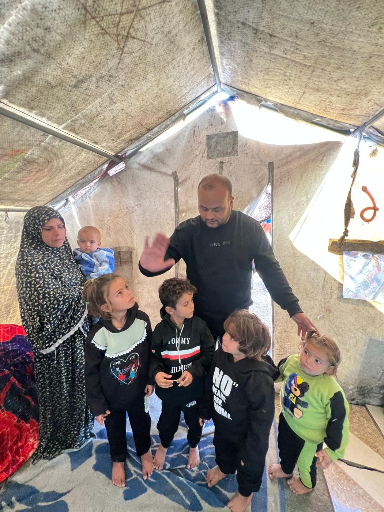


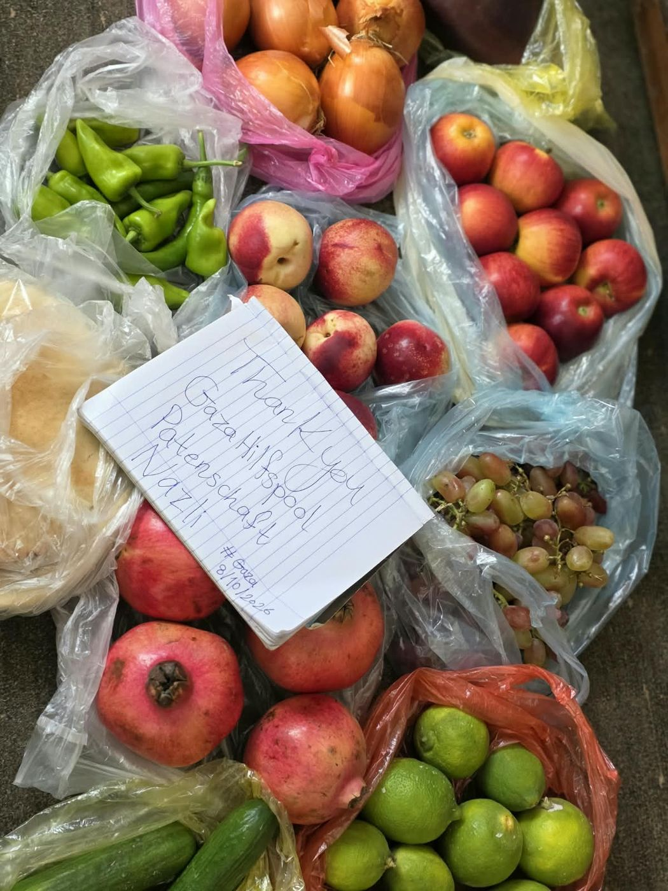


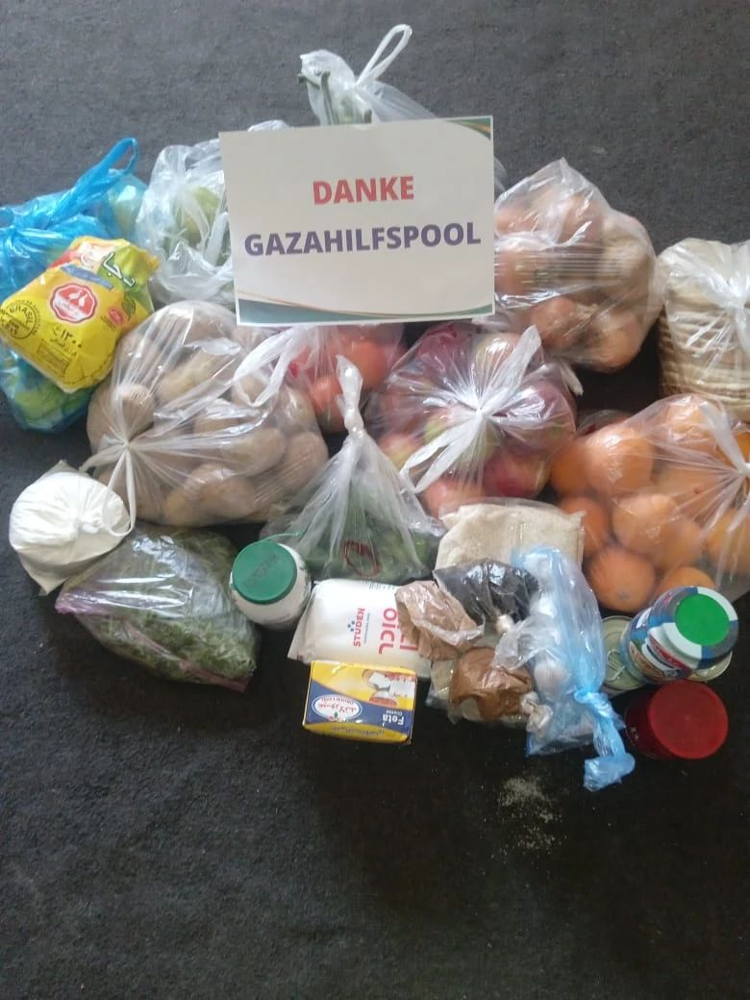
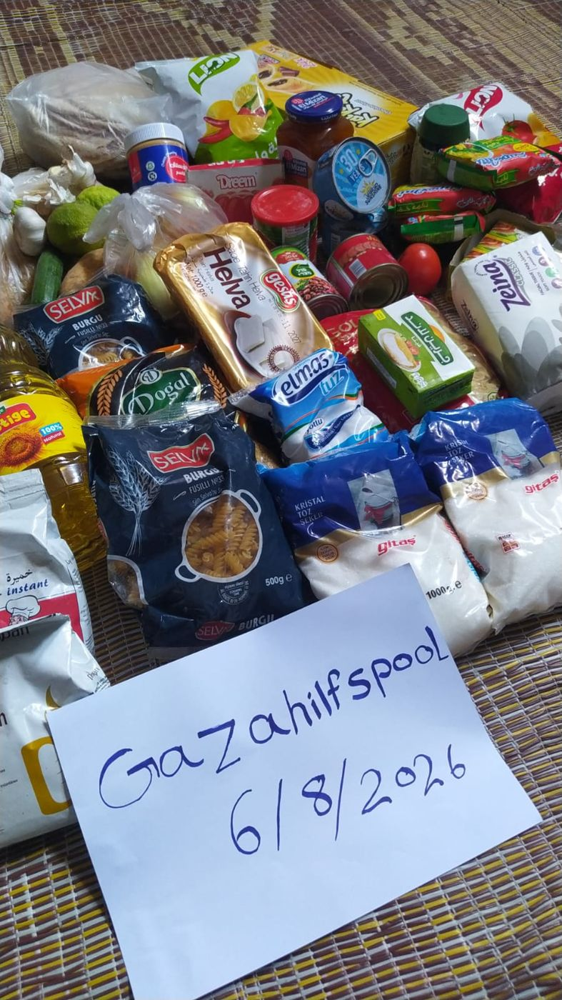


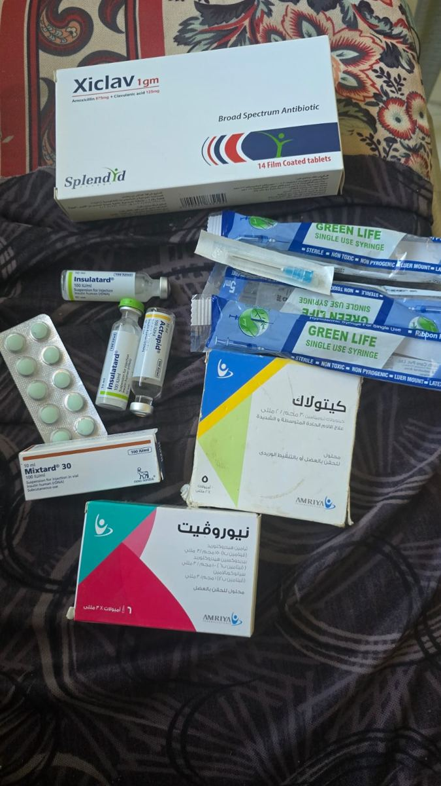
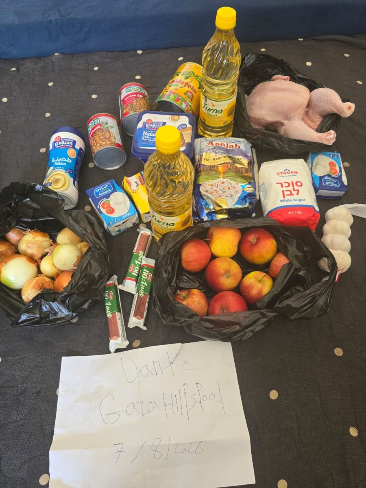


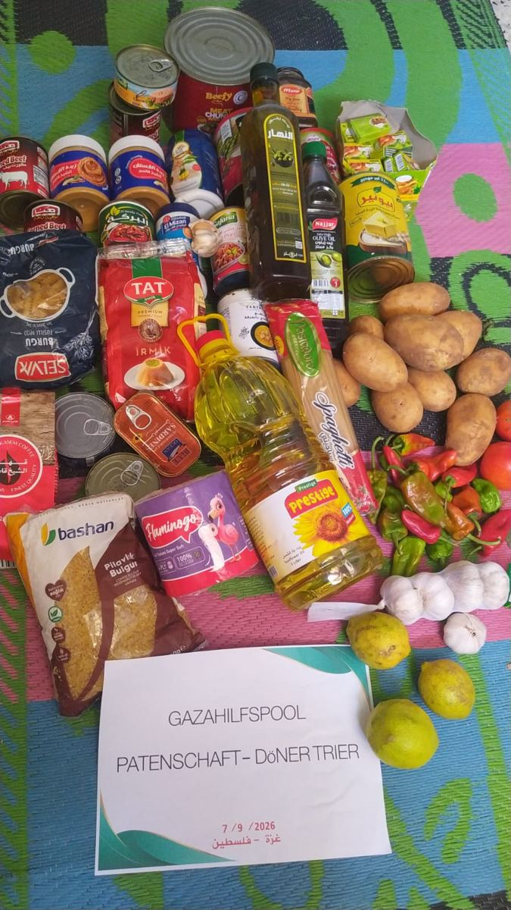
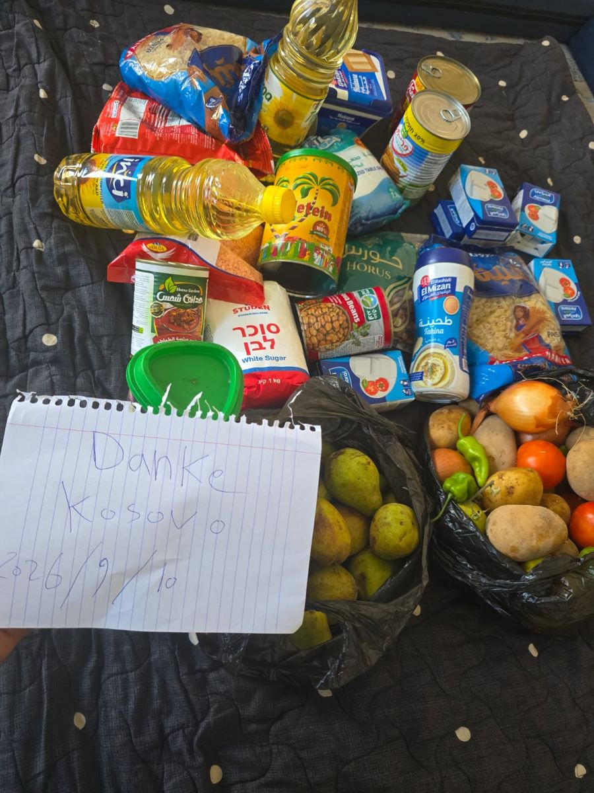


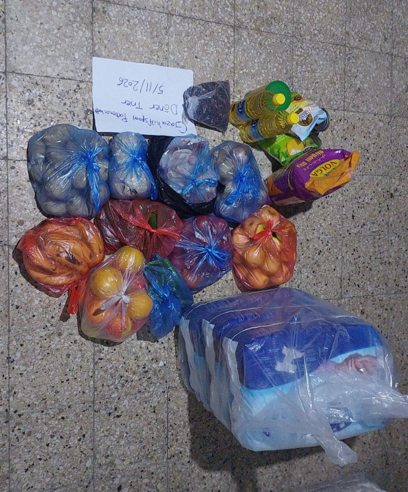


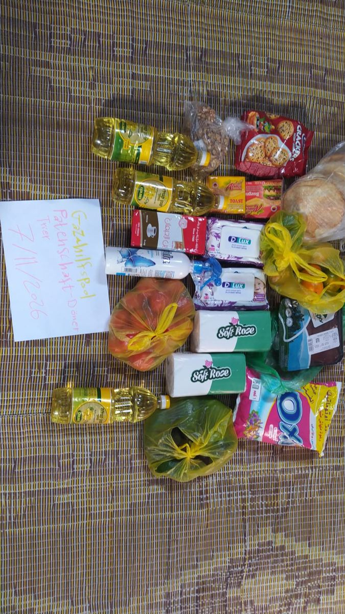

Die Aufrufe von Hope4Humanity

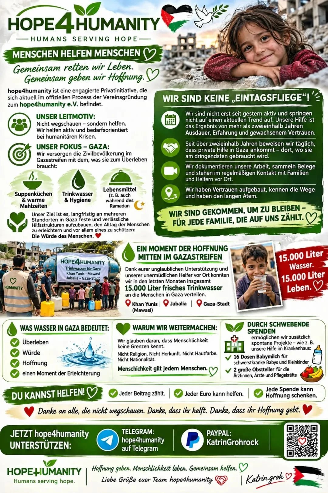
Jeder Euro kann helfen
Brunnen & Wasser
Für die beiden Brunnenprojekte – bitte den Zweck dazuschreiben.
Familienpatenschaft
Richtwert 150 € im Monat je Familie, auch im Team teilbar.
Schwebende Spende
Für spontane Hilfe und dringende Bedürfnisse.
PayPal: Katringrohrock@freenet.de · Telegram: hope4humanity
Diese Website nimmt kein Geld entgegen und leitet keines weiter. Das Projekt ist eine private Initiative: Spenden sind nicht steuerlich absetzbar, es gibt keine Spendenquittung, und es ist nicht von einer unabhängigen Stelle geprüft. Die Angaben beruhen auf den Schilderungen des Projekts.